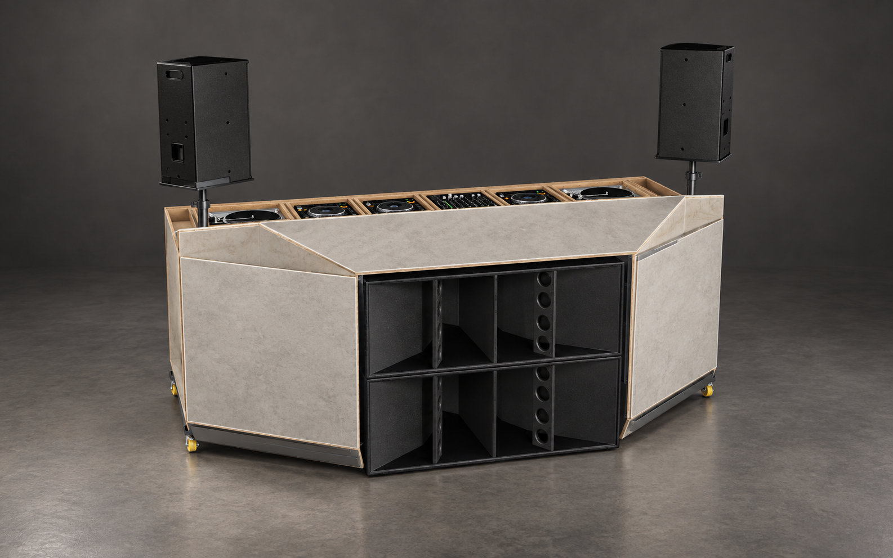
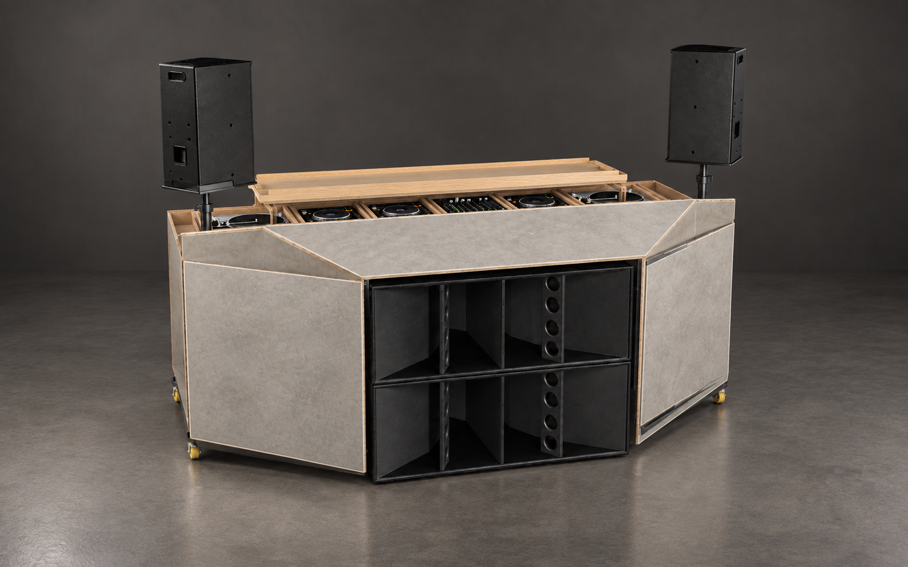
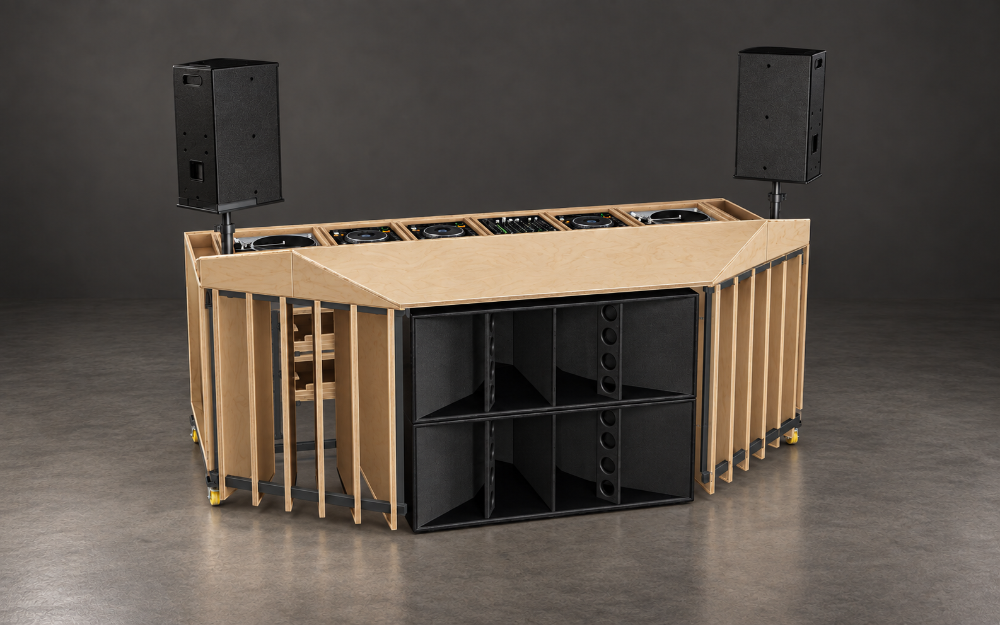
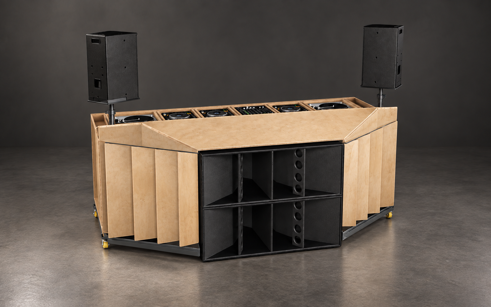
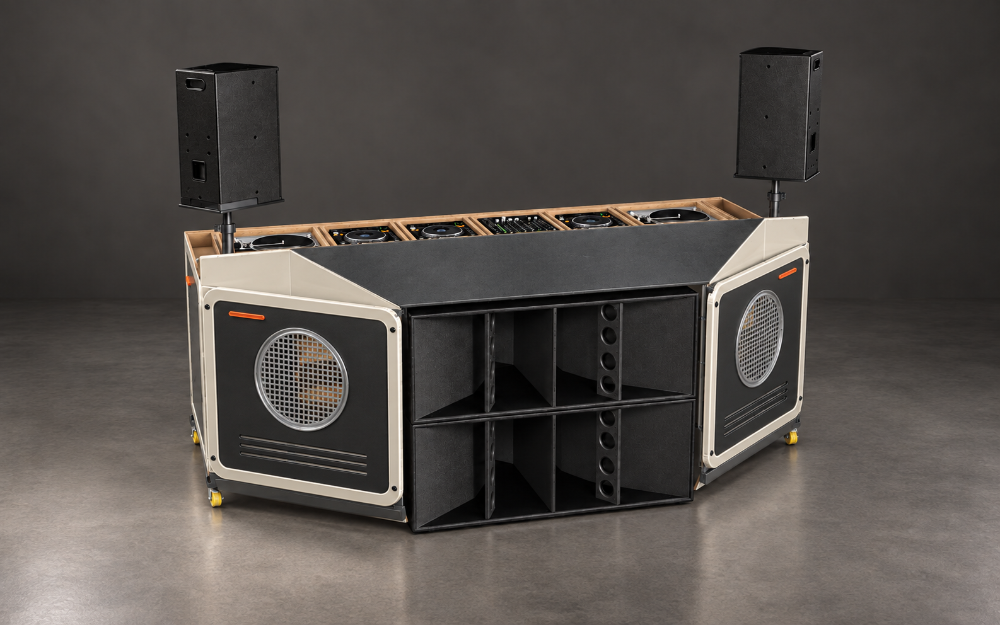

A
Микроцемент · скошенный цоколь
Сплошные минеральные панели и отдельная нижняя грань.
Открыть PNG в полном размере ↗Микроцемент, фанера и японский ретрофутуризм. Общий ракурс и студийный свет — для сравнения формы и материалов. Нажмите на изображение, чтобы открыть его целиком.

Сплошные минеральные панели и отдельная нижняя грань.
Открыть PNG в полном размере ↗
Более цельный низ фасада. Съёмный поддон показан в поднятом положении.
Открыть PNG в полном размере ↗
Тонкие плоскости, открытые промежутки и видимая глубина конструкции.
Открыть PNG в полном размере ↗
Крупные плоскости по исходному эскизу, с разными углами поворота.
Открыть PNG в полном размере ↗
Светлые кассеты, круглые металлические решётки и тёмная приборная маска. Интерпретация капсульности Курокавы, лёгкости Кураматы и промышленного дизайна Sony.
Открыть PNG в полном размере ↗